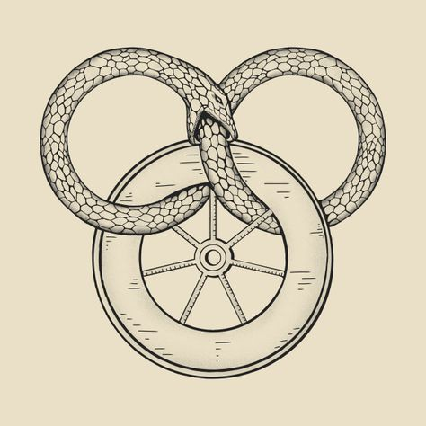
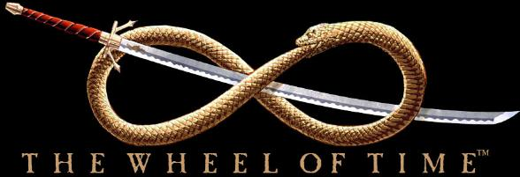
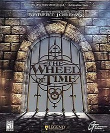

Disclaimer:
**This Wheel of Time Fansite has been created by an individual who has not completed the Wheel of Time Series. All content in this site will be based solely on Books 1-3 of the Series to avoid future spoilers**
Welcome to the Wheel of Time fansite. Originally planned as a six-book series, The Wheel of Time spanned fourteen volumes, in addition to a prequel novel and two companion books. Robert Jordan began writing the first book, The Eye of the World, in 1984. The books were published between 1990 and 2013. Originally written by Jordan, after his death in 2007, Brandon Sanderson was brought on to finish what was to be the 12th and final novel, based on the notes created by Jordan. Sanderson quickly realised the remaining plot to be too much for one volume and so it was split into 3 novels to finish the series. Sanderson also co-wrote a prequel novel set 20 years before the main series based on Jordan's notes.
The series follows Rand al'Thor, a Farm Boy in his mid-teens from a small village on the outskirts of an unnamed land. After his village is almost destroyed by a group of dark creatures called Trollocs, he and his two friends, Mat Cauthon and Perrin Aybara are forced to go on a long journey that will change them and those close to them forever.

Related
Plot
A synopsis breaking down the first 3 books of the Series.
Characters
Discussing some of the main and side characters of the series.
Setting
Explaining the World of the Wheel of Time and the main cities.